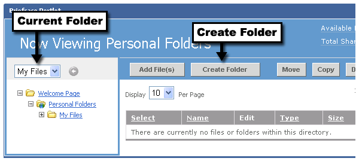

Before creating a new folder in your Briefcase, make sure you first select the folder where you want the file to go. This is done by clicking the folder's name in the left navigation area. Verify that the folder's name appears in the drop-down menu at the top of the navigation area.
When you are ready, click the Create Folder button to begin creating the new folder.

Once you have clicked the Create Folder button, follow these steps:
You will see your folder appear in the left navigation area.